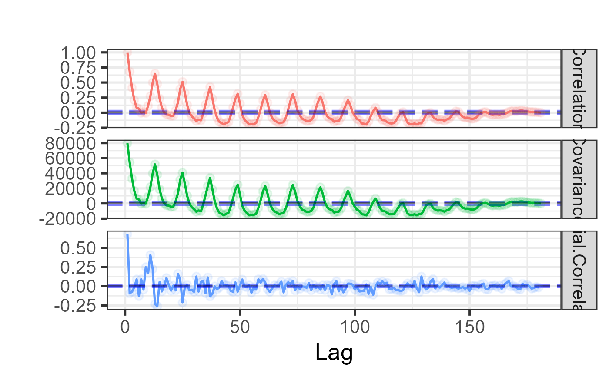

Autocorrelation, autocovariance, and partial autocorrelation plot
Source:R/EXPLORE_TIME_SERIES.R
plot_acf.RdProduces a faceted ggplot2 chart showing the autocorrelation
function (ACF), autocovariance function, and partial autocorrelation
function (PACF) of a time series side by side. Each facet includes dashed
95% confidence interval lines computed from the distribution of the ACF
values, making it easy to identify significant lags and seasonal patterns.
Missing values are excluded via na.action = stats::na.exclude.
Usage
plot_acf(df, lag.max = length(df), base_size = 10, title = "")Value
A ggplot object with three free-scale facets:
- Correlation
Autocorrelation function — measures linear dependence between the series and its own lagged values.
- Covariance
Autocovariance function — the un-normalised version of the ACF.
- Partial.Correlation
Partial autocorrelation function — correlation at each lag after removing the effect of shorter lags, useful for identifying AR model order.
Each facet includes dashed horizontal lines for the 95% CI lower bound (blue), mean (black), and upper bound (blue).
Examples
ts_data <- ts(UKDriverDeaths, start = 1969, end = 1984, frequency = 12)
plot_acf(df = ts_data, base_size = 20)
